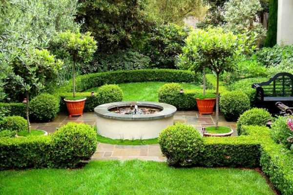
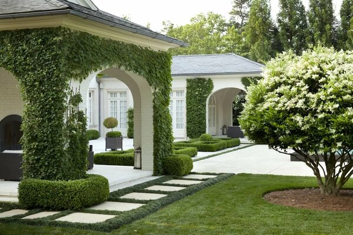
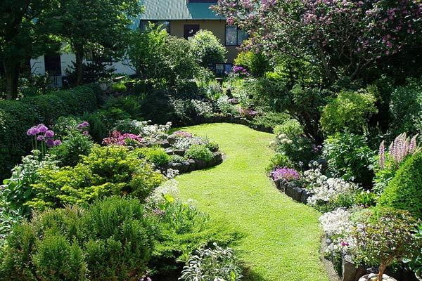
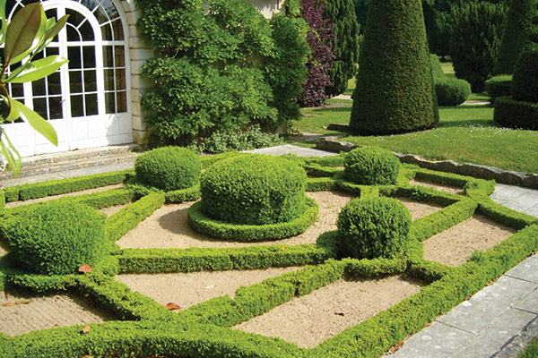
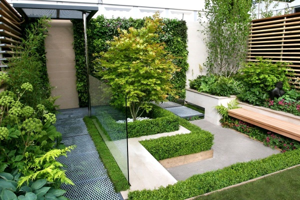
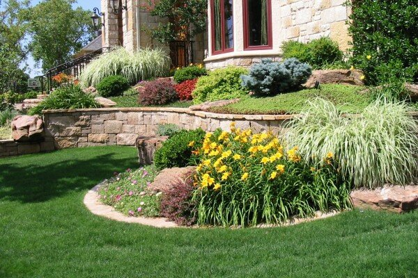

| "Красивая Долина" Ландшафтный дизайн, озеленение и благоустройство |
|
| Примеры работ «Красивая Долина» предоставляет услуги в сфере Ландшафтного дизайна, озеленения и благоустройства территорий по всему Волгограду. Ландшафтные работы представляют собой большой комплекс мероприятий связанных с благоустройством, а также озеленением, которые направлены на обеспечение эффективного функционирования приусадебной территории, придание ей ухоженного, эстетически привлекательного вида. Выполнение данных работ осуществляется поэтапно, причём на каждом этапе необходимо соблюдать соответствующие технологии ландшафтного строительства. Чтобы осуществить грамотное благоустройство участка необходим привлекать специалистов, занятых в области исполнения ландшафтных работ. Номенклатура ландшафтных работ складывается в зависимости от изначального состояния приусадебного участка и формируется согласно поставленным в рамках выполнения ландшафтного дизайн проекта задачами. Стоимость работ формируется различными факторами, основные из которых это ландшафтные условия, площадь участка, объём намеченных на территории работ, а так же цена используемых материалов. Технологическая грамотность является важным фактором для всех специалистов ландшафтной компании (начиная от самих ландшафтных дизайнеров и заканчивая непосредственно исполнителями ландшафтных работ). Наша фирма рада предложить Вам профессиональные услуги по комплексному благоустройству территории и организации эстетически привлекательного ландшафта. Исполняя ландшафтные работы, мы используем новейшие строительные материалы и наиболее эффективные и надёжные технологии. Наша цель - сделать Ваш участок красивым, а главное функциональным. В нашей фирме работают только опытные специалисты, поскольку, осуществляя ландшафтные работы, нашей целью является, чтобы результаты нашего труда долго радовали наших клиентов.       |
Меню Главная Улуги Примеры работ О нас Связь с нами |
| Денис фёдоров 11Б | |